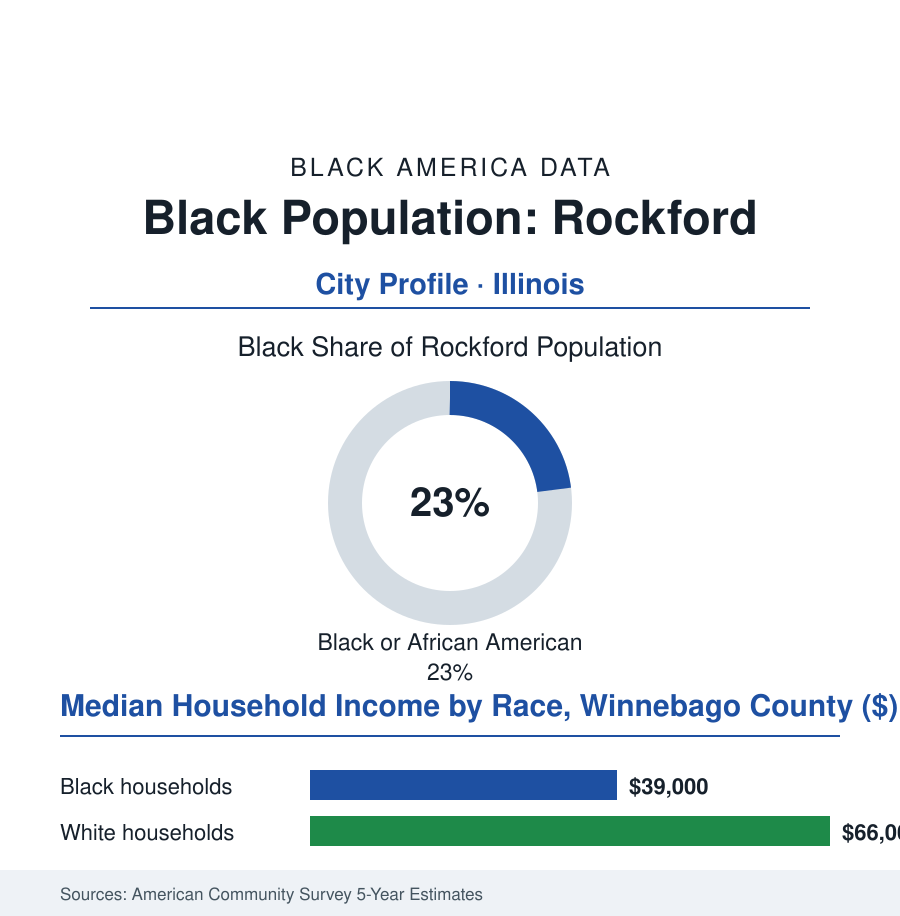

Black Cities
Black Rockford: 33,000 People in the Forest City
Rockford built screws, machine tools, and furniture for the world — and a Black community whose west-side institutions outlasted the factories that drew them. The Forest City's numbers.

Rockford's Black community numbers roughly 33,000 people — about 23% of the Forest City's 147,000 residents — in the northern Illinois manufacturing town that once fastened the world together, literally: the screw and machine-tool capital whose factories drew Black families up the Rock River valley in both Great Migrations. This article reads Rockford's numbers.
Screws, Sewing Machines, and the West Side
The community's roots predate the factories: Black settlers were in Winnebago County from its early decades, the river town's abolitionist-era churches in the record, but the industrial surge made the city — the furniture plants that gave Rockford its Swedish-and-Black shop floors, the machine-tool and fastener works whose wartime expansions recruited through the migration chains from Mississippi and Tennessee — and the postwar decades built the west side's complete Black civic world in the pattern of the industrial atlas (the churches and the Booker Washington center, the business rows of the west-side avenues, the union locals of the UAW and the machinists whose seniority ladders the employment file prices). The era's frictions stand in the school record with unusual national visibility: Rockford's desegregation litigation ran among the longest in the North — a federal case spanning decades, its remedy phases and its magnet-school architecture reshaping the district into the present century, the community's children bussed across the river in both directions in an experiment whose test-score and cohesion data the education journals still cite — and the housing fights of the same years drew the familiar map (the west side's containment, the east side's subdivisions, the river as the city's racial equator in the mortgage data). The music file holds a footnote with a stadium attached: the city's arena-rock era grew from its working-class garages without respect to the river's sides, while the Black church and club circuit's own lineage runs in the historical society's exhibits.
The region's auto file adds the modern era's sharpest local datum a few miles east: the Belvidere assembly plant — generations of Winnebago County paychecks, its Black workforce bused and driven from Rockford's west side in the shift data — idled in the recent industry record and fought over in the national contract talks, its announced afterlives (parts distribution, battery work) tracked in the regional employment data like a weather system. A Rockford household's odds, in the commuting tables, run through that plant's gates more often than the city limits suggest — the metro's economy, as in every file here, ignoring the municipal borders the census profiles obey.
After the Fasteners
The cultural ledger holds one more line the exhibits document carefully: the factory decades' integrated music scene — the VFW halls and garage bands where the shop floors' Black and white musicians shared stages the housing map said they could not share neighborhoods with — and the west side's own stages, the gospel quartets and the club bands of the avenue era, preserved in the oral histories the public library's collection is still recording. A company town's culture, the archivists note, is made on company time's edges, and Rockford's edges were more integrated than its center.
The deindustrialization chapters arrived on the standard schedule with the standard arithmetic — the fastener and tool plants consolidating or offshoring across the eighties and nineties, the unemployment rows of the era's record among Illinois' worst, the population's slow bleed — and the recovery the current data describe is the smaller industrial city's diversified second act: the healthcare campuses (two hospital systems and their expansions making the medical file the west side's largest employer class), the aerospace cluster that kept a precision-manufacturing core alive around the airport (the MRO hangars and the cargo hub's logistics rows), the Swedish furniture giant's American beachhead as symbol of the new trade winds — and the household data still carrying the transition's cost in the county cuts (a Black median in the high thirty-thousands, the west side's poverty concentration in the tract maps, the housing stock's age and the land bank's vacancy rows). The civic answers are the atlas's established forms with a local accent: the school district's post-litigation magnet era maturing into career academies, the west-side corridor plans, the community's church and foundation infrastructure, and a heritage claim few Illinois cities can match — a Black community present from the county's first decades, industrialized, litigated, and still here, its institutions' archives among the fullest downstate records of the whole Midwestern migration.
Reading Rockford's Numbers
Thirty-three thousand people in the Forest City: Rockford is the cities file's Rock River chapter — the fastener's wages, the courtroom's decades, the hospital's ladder. The census counts the residents. The river, which divided the town on every map that mattered, keeps flowing through a city still working to be one town on both banks.
More in Black Cities
Black Atlanta: Population, Distribution, and Growth of a Black Metropolis
Metro Atlanta holds more than two million Black residents — roughly one in three, second only to New York. The suburban distribution, migration history, and composition of Black Atlanta in the census data.
Black New York: The Largest Black Population in America
The New York metropolitan area holds about 3.4 million Black residents — more than any metro in the nation — and the city itself about two million. The census profile.
Black Washington: The District and the Metro
The Washington metro holds about 1.6 million Black residents, and the District itself — long a majority-Black city — now records a Black share near 41 percent. The census profile.
Source: U.S. Census Bureau, 2020 Census and American Community Survey 5-year estimates; City of Rockford and Winnebago County; Rockford historical collections.